Казки, що вчать мови 📚
TwoMeows — двомовні аудіоказки, з якими дитина слухає історію рідною мовою і непомітно для себе вивчає слова іншої. З картинками, озвучкою та чарівним підсвічуванням слів.
- ✅ Контент перевірено педагогом
- 🚫 Без реклами
- 🌙 Таймер сну
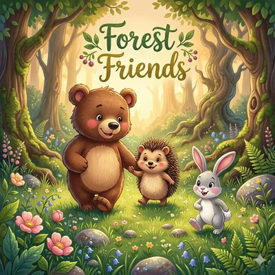
Ведмедик побачив на галявині маленького ježko 🦔 їжачок і радісно помахав йому лапкою.
Що таке TwoMeows? 🎧
Це бібліотека інтерактивних аудіоказок для найменших. Дитина слухає захопливу історію українською, а ключові слова звучать словацькою — з картинками, перекладом і чіткою вимовою. Так друга мова засвоюється природно, як рідна: через казку, гру та повторення.
Живе озвучення
Кожна казка озвучена виразно та тепло — як читає мама чи тато. Слова підсвічуються синхронно з голосом, наче караоке.
Слова з картинками
Кожне нове слово має яскраву ілюстрацію, переклад і озвучку. Дитина бачить, чує і запам'ятовує.
Розвиток через гру
Мовлення, слух, увага, мислення та словниковий запас розвиваються самі собою — поки дитина просто слухає улюблену казку.
Як це працює? 🪄
Обери казку
Пригоди, тваринки, космос або казка на добраніч — під вік і настрій дитини.
Слухай і стеж
Текст підсвічується разом із голосом. Іноземні слова виділені кольором і звучать особливо чітко.
Вивчай слова
Після казки — маленьке повторення: слова з картинками, які дитина щойно почула в історії.
Збирай нагороди
Наліпки, рівні супергероя та скарбничка слів — щоб хотілося повертатися щодня.
Створено з турботою про батьків 👨👩👧
Кожна казка перевірена педагогом
Жодна історія не потрапляє в застосунок без перевірки спеціаліста з раннього розвитку. Ми перевіряємо зміст, лексику, темп і відповідність віку — і публікуємо лише те, що справді корисне та безпечне для дитини.
Безпечний простір
Без реклами, без сторонніх посилань, без випадкового контенту. Тільки казки та навчання.
Таймер сну
Увімкніть казку на добраніч — застосунок сам тихенько вимкнеться, коли малюк засне.
Профілі для кожної дитини
Кілька дітей — кілька профілів. У кожного свій прогрес, улюблені казки та нагороди.
Видимий прогрес
Скільки казок прослухано, скільки слів вивчено — ви завжди бачите, як росте ваша дитина.
Розвиток мовлення
Виразне озвучення та повторення збагачують словниковий запас і рідної, і другої мови.
Розумний хронометраж
Казки по 10–15 хвилин — достатньо для користі, не забагато для екранного часу.
А для дітей це просто гра ⭐
У TwoMeows працює «Школа супергероїв»: за кожну прослухану казку та вивчене слово дитина отримує нагороди.
Рівні сили супергероя — слухай казки та ставай сильнішим
Яскраві наліпки за досягнення
Скарбничка слів — колекція всіх вивчених слів
Щоденний подарунок — маленька радість щодня
Бібліотека, що росте щотижня 📚
Нові казки з'являються постійно — від колискових для дворічних до пригод для майбутніх першокласників.
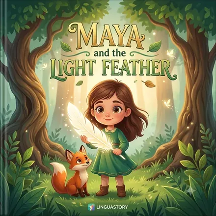
Майя та Світляне Перо
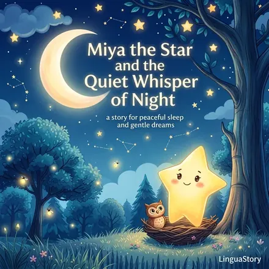
Зірочка Мія і Тихий Шепіт Ночі
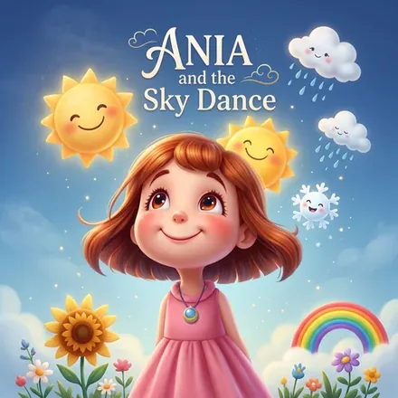
Аня та Танець Неба
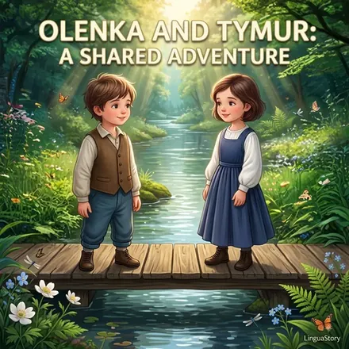
Оленка та Тимур: Спільна Пригода
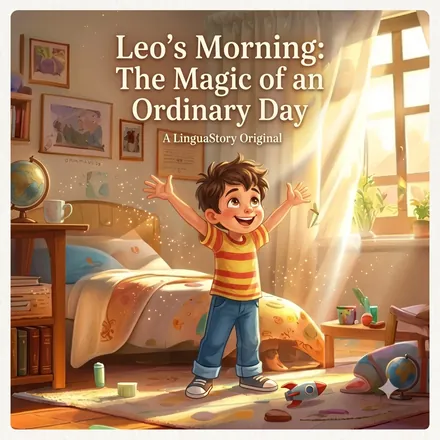
Ранок Левка: Чари Звичайного Дня
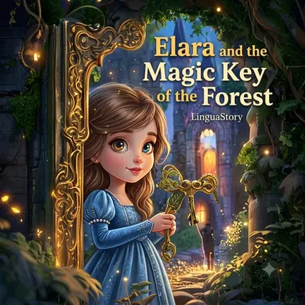
Елара та Чарівний Ключ Лісу
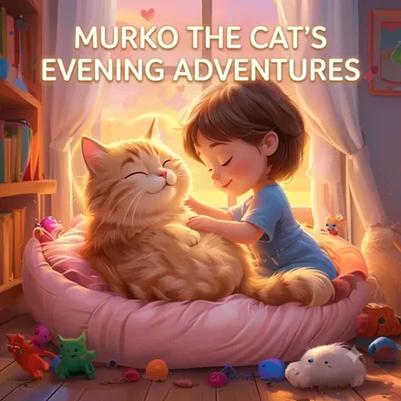
Вечірні Пригоди Мурчика
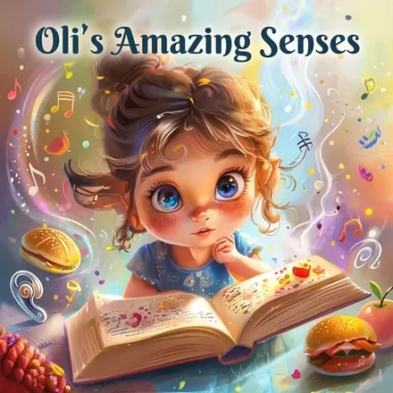
Олі та її Дивовижні Відчуття
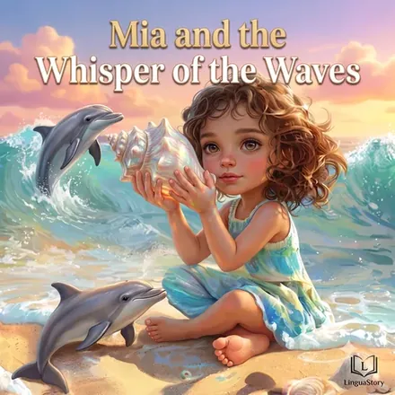
Міа та Шепіт Хвиль
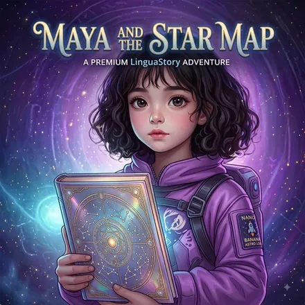
Мая та Зоряна Карта
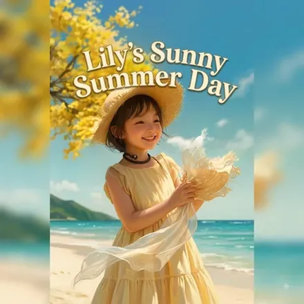
Лілійчин Сонячний День
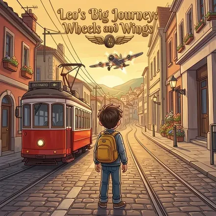
Велика Подорож Лева: Колеса та Крила
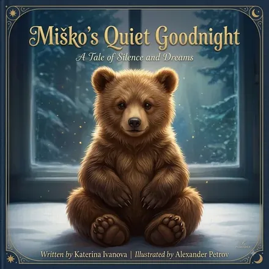
Тиха Добраніч Ведмедика Мішка
Чому це працює 🎓
🧠 Найкращий вік для мов
У 2–7 років мозок дитини засвоює мови природно, без зубріння. Це «золоте вікно» раннього розвитку — і казки використовують його на повну.
👂👁️ Мультисенсорне навчання
Дитина одночасно чує слово, бачить картинку та стежить за підсвіченим текстом. Три канали сприйняття — утричі міцніше запам'ятовування.
🔁 Повторення без нудьги
Слова повертаються в різних казках і в режимі повторення після історії. Улюблену казку можна слухати знову і знову — і це теж навчання.
❤️ Емоційний зв'язок
Слова, почуті в улюбленій історії, запам'ятовуються краще, ніж будь-які картки. Емоція — найсильніший клей для пам'яті.
Почніть безкоштовно вже сьогодні 🎉
Перші казки — безкоштовні, без картки та зобов'язань. Повна бібліотека з новими історіями щотижня — за підпискою.
🐱 Завантажити TwoMeowsЗастосунок незабаром з'явиться в Google Play
Часті питання 💬
З якого віку можна користуватись застосунком?
Від 2 років. Для найменших є короткі казки та колискові з простими словами, для дітей 5–7 років — довші пригоди з багатшою лексикою. Вік вказано на кожній казці.
Хто перевіряє контент?
Кожна казка перед публікацією проходить перевірку педагога — спеціаліста з раннього розвитку. Перевіряється зміст, лексика, темп оповіді та відповідність заявленому віку.
Які мови підтримуються?
Зараз казки звучать українською з вивченням словацьких слів. Ми працюємо над новими мовними парами — зокрема польською та англійською.
Чи потрібен постійний інтернет?
Ні. Завантажену казку можна слухати без інтернету — в дорозі, на дачі чи в літаку.
Що безкоштовно, а що за підпискою?
Перші казки повністю безкоштовні — можна спокійно спробувати. Підписка відкриває всю бібліотеку та нові історії, які з'являються щотижня.
Чи безпечний застосунок для дитини?
Так. Жодної реклами, жодних сторонніх посилань і покупок, доступних дитині. Налаштування та підписка захищені батьківським доступом.